<mat-toolbar color="primary">
  <button mat-flat-button color="primary" [routerLink]="'home'" routerLinkActive="active-button"> AaaS.Web</button>
  <button mat-flat-button color="primary" [routerLink]="'dashboard'" routerLinkActive="active-button">Dashboard</button>
  <button mat-flat-button color="primary" [routerLink]="'detectors'" routerLinkActive="active-button">Detectors</button>
  <span class="spacer"></span>
  <button mat-flat-button color="primary" [routerLink]="'home'">Logout</button>
</mat-toolbar>